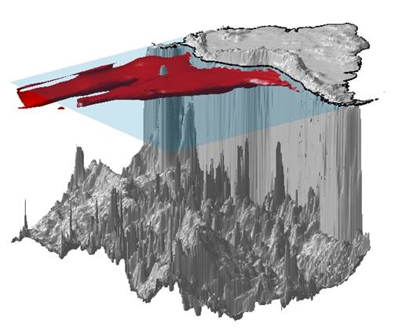

| Latest News (see all news) |
- dasda (02 September, 2019):
sdadada
(read more) - asd (23 February, 2017):
asd
(read more) - Recent publication (03 December, 2010):
The article "A criptic sulfur cycle in oxigen-minimum-zone waters off the chilean coast" by Canfield et al. has been published in Science (Abstract).
Welcome to the ESP-OMZ Website
Oxygen minimum zones (OMZs) are regions of the global ocean that present low dissolved oxygen concentrations (<22 µM) at intermediate depths (50-1000 m) due to a reduced ventilation and high respiration rates of the settling organic matter produced in the surface waters. Although they represent only a small fraction of the global ocean volume (~0.1%), they are considered to be an important sink for fixed nitrogen, contributing 30-50% of the oceanic nitrogen removal, mainly through the process of denitrification. Moreover, they are important sources of the greenhouse gases carbon dioxide (CO2) and nitrous oxide (N2O), the latter also involved in the destruction of stratospheric ozone.
In spite of the global biogeochemical and climatic importance of these OMZs, the physical mechanisms by which they are maintained and by which they can vary in space and time are not well understood. Furthermore, many of the biogeochemical processes occurring within the OMZ and the phylogenetic and metabolic diversity of the microorganisms inhabiting them are poorly known.
With the support of the Agouron Institute (Pasadena, California), we have initiated a project to study the OMZ of the eastern South Pacific (ESP).
To characterize the spatial and temporal variability of the OMZ in the ESP and to understand the physical mechanisms behind it, we will monitor the dissolved oxygen concentration together with physical and bio-optical properties of the water column with autonomous profiling ARGO floats and moored instruments.
Furthermore, we will also initiate the application of environmental genomic tools to provide insight into the diverse genetic and metabolic characteristics of the microorganisms inhabiting the OMZ, particularly in relation to nitrogen and carbon cycling in suboxic waters.Through this Website we will document the development of the project, disseminate the scientific results, and distribute the data.